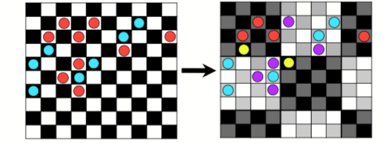
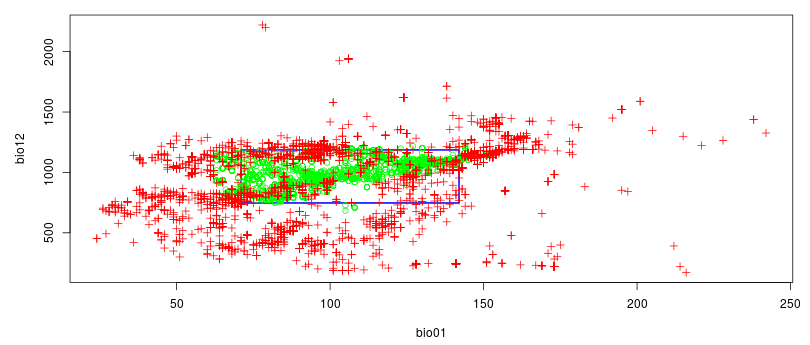
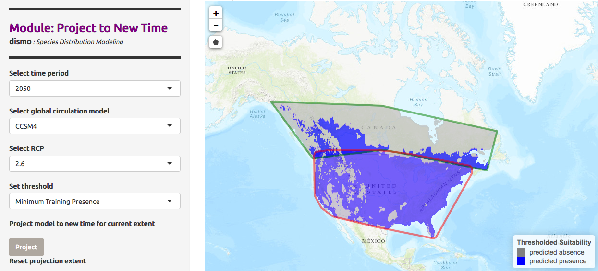
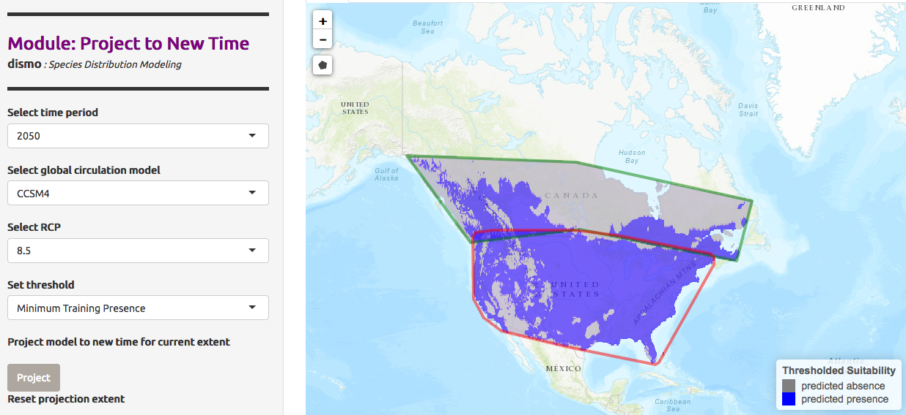

Species Distribution Modeling (SDM) can help understand the distribution of a species depending on its environment. It can also attempt to quantify the impact of climate change on the species habitat, direct conservation efforts and predict invasive species distributions. This is done by associating data of species occurrences (observations) with a set of environmental data (such as temperature and precipitation).
The goal of this tutorial is to model a theoretical ecological niche and predict species distribution in a future climate scenario by using SDM with the Wallace interactive environment on Galaxy. We’ll use the data occurrences of US Chrysemys picta (Painted turtle) from the North America region.
In this study the datasets are all imported from the GBIF databanks. It is also possible to import from bison, iNaturalist and others.
hands_on Hands-on: Import the data
Create a new history for this tutorial and give it a proper name
tip Tip: Creating a new history
Click the new-history icon at the top of the history panel
If the new-history is missing:
Click on the galaxy-gear icon (History options) on the top of the history panel
Select the option Create New from the menu
tip Tip: Renaming a history
Click on Unnamed history (or the current name of the history) (Click to rename history) at the top of your history panel
Type the new name
Press Enter
Get species occurrences datatool with the following parameters
“Scientific name”: chrysemys picta
“Data source”: gbif
“Number of records to return”: 10000
Inspect the generated file with the Scratchbook
We have now a tabular file with about 10,001 lines and many columns.
question Questions
What do the lines in the files represent?
What are the columns 1, 2, 3 and 51 of the generated file?
solution Solution
Each line represent an observation of Chrysemys picta, with its location, and some other metadata
Column 1 is the name, column 2 the longitude of the observation of Chrysemys picta, column 3 the latitude and column 50 the country code of the location
We would to extraction the 4 columns previously cited and keep only occurrence records from US.
hands_on Hands-on: Import the data
Cut columnstool with the following parameters
“Cut columns”: c1,c2,c3,c51
“Delimited by”: Tab
param-file“From”: output of Get species occurrences data
Inspect the generated file and check the 4 columns
Filter datatool with the following parameters
param-file“Filter”: output of Cut columns
“With following condition”: c4=='US'
“Number of header lines to skip”: 1
Inspect the generated files
question Question
How many occurrences have been conserved?
solution Solution
64.55% of the occurrences (6,456) are conserved
Tabular to CSVtool
param-file“tabular file”: output of Filter
“output csv Separator”: ,
“Header in file”: Yes
Due to an issue related to the actual tabular to csv converter application to GBIF format, each " sign is triplicated on the resulting file. You need to replace """ by " using for example the Replacetool parts of text tool.
Step 2: Development and evaluation of SDM using Wallace
Wallace is a R Shiny app integrated into Galaxy. It provides an interactive environment for the rapid and effective development and evaluation of SDM, including data download, cleaning, partitioning, modeling, visualisation and predictions.
Transmit occurrence data from Galaxy to Wallace
With this you can either upload file you’ve loaded earlier from Galaxy data or you can download data directly from Wallace. Let’s use the data from your Galaxy history:
hands_on Hands-on: Launch Wallace
Verify your current history is the history containing previous filtered occurences data, then go to https://ecology.usegalaxy.eu/root?tool_id=interactive_tool_wallace and click on execute
Go to User > Active InteractiveTools, then click on the active InteractiveTool named Wallace visualisation
In Wallace
Due to an issue related to last wallace Docker update, a manual fix is proposed waiting for a better solution. You first have to go to the 5 Partition Occs, selecting “Spatial Partition” then for “Options available” selecting Checkerboard 2 (k=4) then click on the Partition button. This will fix the issue so now you have the “Aggregation Factor” displayed. Sorry for the inconvenience.
Go to 1 Occ Data
In Obtain Occurrence Data
“Modules Available”: Galaxy History User
“Select from your Galaxy History User csv file”: output of Tabular to CSV
Click on Load Occurrences
In the main panel of Wallace, the data will load. They can now be inspected using the map, the table, etc
You now have your occurrence records on Wallace!
Process occurrence data
For the modelling, we need to the choose the occurrences we want to use. There is 4 ways to do it in Wallace in the 2 Process Occ panel:
Selecting occurrences on the map by delimiting an interesting geographic area
Removing occurrences by ID
Delimiting a spacial thin
This allow to select occurrences by setting a minimum distance (in km) between the different occurrences. For example, by typing 30km, we will get all the occurrences on the map which are at minimum 30km from each other.
Considering all the occurrences
We want to work on the data from the US, we will select the occurrences with the 1st option
hands_on Hands-on: Select interesting occurrences
Go to 2 Process Occ
In Process Occurrence Data
“Modules Available”: ` Select Occurrences On Map`
In the middle panel,
Click on the polygon icon on the map
Draw a polygon to delimit the area
On the left panel, click on Select Occurrences
Obtain Environmental Data
We would like now to provide environmental variables, that are considered relevant for biological purposes. The Bioclimatic variables consist of such original and derived variables. We will associate them with the occurrence data, using the WorldClim Bioclims module.
This module provides a raster with environmental variables from online sources. The raster is composed of environmental information. Each layer of the raster contains a climatic variable: starting from BIO1 = Annual mean temperature, to BIO19 = Precipitation of Coldest Quarter.
hands_on Hands-on: Obtain Environmental Data
Go to 3 Env Data
In Obtain Environmental Data
“Modules Available”: WorldClim Bioclims
comment Using your own raster
If you prefer to load your own raster:
Import it into Galaxy in the GeoTIFF format
In Obtain Environmental Data
“Modules Available”: Galaxy History User
“Select from your Galaxy History User csv file”: imported GeoTIFF file
Wallace will now associate environmental data and occurrences data to train a model.
It first creates a buffer zone around the occurrences
We can choose the size of the buffer zone to control the area we will be working with and on which a map of suitability will be made.
Several background extent can be used:
Bounding box will define an area where the occurrences centered
Minimum convex polygon will make an area considering the repartition of the occurrences
Point buffers will use occurrences localities to build a buffer zone around each occurrence
It samples Background Points
hands_on Hands-on: Obtain Environmental Data
Go to 4 Process Envs
In Process Environmental Data
“Modules Available”: Select Study Region
In Step 1: Choose Background Extent
“Background Extents”: Minimum convex polygon
“Study region buffer distance (degree)”: 1
Click on Select
In Step 2: Sample Background Points
“No. of background points”: 100000
Click on Sample
Partition Occurrence Data
By partitioning data, a dataset is divided into subsets (i.e. bins). A model is then built on each of subsets but one and test it on the last one (assuming that all the groups are independent).
There is 2 possible way to partition data:
Non-spatial Partition: a partition used when there is no bias due to space, time or sampling method
Jakknife (k=n): each occurrence in the dataset is considered as equal to a bin. This is usually used when you have a small dataset with no known bias
Random k-fold: partition the data randomly in a number of bins set by the user with the option Number of Folds
Spatial Partition: a partition used when there could be bias due to time, space or sampling method
Block (k=4): the area is divided in four and the different occurrences are put equally into four bins
Checkerboard 1 (k=2): two bins are used according to the position of the occurrence on the grid
Checkerboard 2 (k=4): four bins are used according to the position of the occurrence on the grid. This require an aggregation factor, which is the size of a second grid put on a first one. For example, with a factor 4, the grids size will be 4x4
Figure 1: Example of checkerboard (k=4) with a factor 4. Source: doi:10.0.4.87/2041-210X.12261
For both of these techniques the number of occurrences into each bin may vary.
hands_on Hands-on: Partition Occurrence Data
Go to 5 Partition Occs
In Partition Occurrence Data
“Modules Available”: Spatial Partition
“Options Available:”: Checkerboard 2 (k=4)
“Aggregation Factor”: 6
Click on Partition
Build and Evaluate Niche Model
Wallace can build different models using either:
The presence-only approach BIOCLIM (Module BIOCLIM) (Booth 2018)
The presence-background (presence-pseudo absence) algorithm Maxent (Module Maxent)
To evaluate these models, Wallace computes the performance on a hold-out dataset (data not used for training) and provide evaluation metrics as the AUC (Area Under the Curve) mean. As a rule of thumb, an AUC of 0.75 and above is considered good, and closer to 1 is better.
hands_on Hands-on: Build and evaluate the niche model
Go to 6 Model
In Build and Evaluate Niche Model
“Modules Available”: BIOCLIM
Click on Run
Visualize Model Results
We would like now to visualize the model of the theoretical niche. First we will make a chart to simulate an ecological niche:
X-axis: temperature
Y-axis: the annual precipitation
hands_on Hands-on: Visualize Model Results
Go to 7 Visualize
In Visualize Model Results
“Modules Available”: BIOCLIM Envelope Plots
“Axis 1”: 1
“Axis 1”: 12
“Set threshold”: 0.75

The optimum environmental parameters for this species (represented in green) is between 5°C and 15°C (on the graph, values are x10) with an annual precipitation between approximately 700mm and 1250mm.
To visualize the suitability on the map, we can use the map prediction module.
hands_on Hands-on: Visualize Model Results
In Visualize Model Results
“Modules Available”: Map Prediction
“Set threshold”: No threshold
It will display a gradient of predicted presence or use. If you prefer a map with the predicted presence and predicted absence, select minimum training presence.
Click on Plot
Project Model
Wallace can use the trained model to predict possible species distributions in a different area, outside of the sampled one. Here, we will try it for the Canada.
hands_on Hands-on: Visualize Model Results
Go to 8 Project
In Project Model
“Modules Available”: Project to New Extent
In the middle panel,
Click on the polygon icon on the map
Draw a polygon around a part of Canada
In Project Model
“Set threshold”: Minimum Training Presence
Click on Project
We can also predict not only for a different area, but also different timing and climate. The Global Circulation Model (GCM) are used here to predict atmospheric fluctuation and then study climate change. Each model is different and use parameters like ocean atmosphere and others. The prediction need also a RCP scenario, a scenarios about the amount of greenhouse gases emitted in the near future. This scenario may have different predicted presence models.
We would like to predict the presence of Chrysemys Picta in Canada in 2050, given the model CCSM4, a US model based on earth circulation, and a RCP value of 2.6
hands_on Hands-on: Visualize Model Results with a 2.6 RCP
In Project Model
“Modules Available”: Project to New Time
“Select time period”: 2050
“Select global circulation model”: CCSM4
“Select RCP”: 2.6
“Select threshold”: Minimum Training Presence
Click on Project

We would like now to compare the prediction for RCP value of 8.5 .
hands_on Hands-on: Visualize Model Results with a 8.5 RCP
In Project Model
“Modules Available”: Project to New Time
“Select time period”: 2050
“Select global circulation model”: CCSM4
“Select RCP”: 8.5
“Select threshold”: Minimum Training Presence
Click on Project

Conclusion
Following this tutorial, we have been able here to load a dataset of occurrences used in the shiny app Wallace and model the repartition of Chrysemys picta (Painted turtle) with the Species Distribution Modeling (SDM) method. It allowed us to visualize it’s ecological niche and how climate change can influence it’s future repartition on North America. The project saved can help for future similar studies.
details Some useful references
Predicting species distributions for conservation decisions (Guisan et al. 2013).
BIOCLIM: the first species distribution modelling package, its early applications and relevance to most current MAXENT studies. Diversity and Distributions (Booth 2018).
ENMeval: An R package for conducting spatially independent evaluations and estimating optimal model complexity for MAXENT ecological niche models. (Muscarella et al. 2014).
Here for informations on Global Circulation Model(GCM), how it’s done what is taken in consideration and more.
keypoints Key points
Use ‘classical’ Galaxy tools in combination with Interactive tools
Identify general steps of a species distribution modeling aproach
Useful literature
Further information, including links to documentation and original publications, regarding the tools, analysis techniques and the interpretation of results described in this tutorial can be found here.
References
Guisan, A., R. Tingley, J. B. Baumgartner, I. Naujokaitis-Lewis, P. R. Sutcliffe et al., 2013 Predicting species distributions for conservation decisions. Ecology letters 16: 1424–1435.
Muscarella, R., P. J. Galante, M. Soley-Guardia, R. A. Boria, J. M. Kass et al., 2014 ENM eval: An R package for conducting spatially independent evaluations and estimating optimal model complexity for Maxent ecological niche models. Methods in Ecology and Evolution 5: 1198–1205.
Booth, T., 2018 BIOCLIM–the first species distribution modelling package.
Feedback
Did you use this material as an instructor? Feel free to give us feedback on how it went.
Batut et al., 2018 Community-Driven Data Analysis Training for Biology Cell Systems 10.1016/j.cels.2018.05.012
details BibTeX
@misc{ecology-species-distribution-modeling,
author = "Elisa Michon and Yvan Le Bras and Bérénice Batut",
title = "Species distribution modeling (Galaxy Training Materials)",
year = "2021",
month = "01",
day = "06"
url = "\url{/training-material/topics/ecology/tutorials/species-distribution-modeling/tutorial.html}",
note = "[Online; accessed TODAY]"
}
@article{Batut_2018,
doi = {10.1016/j.cels.2018.05.012},
url = {https://doi.org/10.1016%2Fj.cels.2018.05.012},
year = 2018,
month = {jun},
publisher = {Elsevier {BV}},
volume = {6},
number = {6},
pages = {752--758.e1},
author = {B{\'{e}}r{\'{e}}nice Batut and Saskia Hiltemann and Andrea Bagnacani and Dannon Baker and Vivek Bhardwaj and Clemens Blank and Anthony Bretaudeau and Loraine Brillet-Gu{\'{e}}guen and Martin {\v{C}}ech and John Chilton and Dave Clements and Olivia Doppelt-Azeroual and Anika Erxleben and Mallory Ann Freeberg and Simon Gladman and Youri Hoogstrate and Hans-Rudolf Hotz and Torsten Houwaart and Pratik Jagtap and Delphine Larivi{\`{e}}re and Gildas Le Corguill{\'{e}} and Thomas Manke and Fabien Mareuil and Fidel Ram{\'{\i}}rez and Devon Ryan and Florian Christoph Sigloch and Nicola Soranzo and Joachim Wolff and Pavankumar Videm and Markus Wolfien and Aisanjiang Wubuli and Dilmurat Yusuf and James Taylor and Rolf Backofen and Anton Nekrutenko and Björn Grüning},
title = {Community-Driven Data Analysis Training for Biology},
journal = {Cell Systems}
}
congratulations Congratulations on successfully completing this tutorial!
 Elisa Michon
Elisa Michon Yvan Le Bras
Yvan Le Bras Bérénice Batut
Bérénice Batut